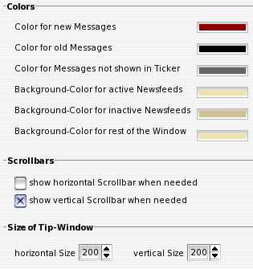

IV.IX. Active-ToolTip (Layout)
Colors
Hier können die Farben, welche im Active-ToolTip zur Verdeutlichung der verschiedenen Zustände einzelner Nachrichten existieren, geändert werden.
Scrollbars
Wenn gewünscht, kann hier angegeben werden, ob im Active-ToolTip bei Bedarf ScrollBars angezeigt werden. Werden diese Optionen deaktiviert, kann der angezeigte Ausschnitt auch nicht mit der Maus bewegt werden.
Size of Tip-Window
Hier kann die Größe des Active-ToolTip angegeben werden. Wird die Größe des Active-ToolTip direkt am Active-ToolTip-Fenster verändert, werden die Werte hierher übernommen.